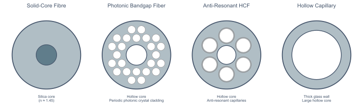

Fiber Types

Solid Core Fiber
- Core: solid silica (n ≈ 1.45); Cladding: slightly lower-n doped silica
- Guidance via Total Internal Reflection — requires ncore > ncladding
- Light in glass — high material dispersion and Kerr nonlinearity
Hollow Core Fiber
- Core: gas or vacuum; Cladding: microstructured silica — TIR impossible
- Light through gas — ~1000× lower dispersion and nonlinearity than solid core
- Photonic Bandgap (PBG): periodic cladding creates a reflective bandgap — low loss, but narrow bandwidth and fragile
- Anti-Resonant (AR): tube diameter tuned for destructive interference in the walls — low loss, broad bandwidth, but fragile
- Hollow Capillary: guidance via grazing-angle reflectivity — lower transmission, but tolerates high-intensity pulses